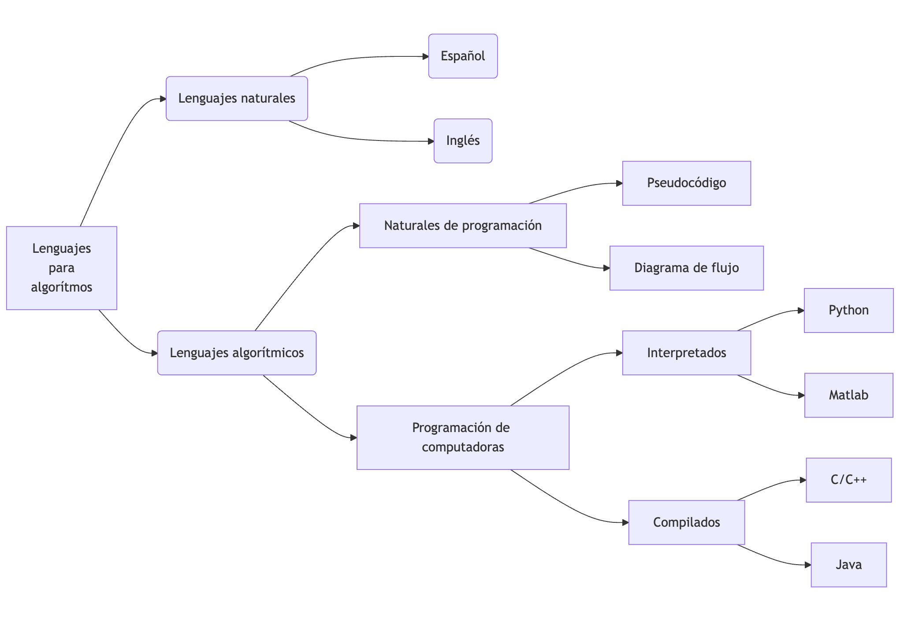

TECNM Campus QRO Programación Ing. Eléctrica 2026 Parte 1
Rodrigo López Farías
Programación
Ing. Electrica.
Instituto Tecnológico de Querétaro
Profesor: Dr. Rodrigo López Farías
1. Fundamentos de Programacion
Importancia de la programacion de computadoras
Clasificacion de los tipos de lengujes de programacion
Diseno de algoritmos
Diagramas de flujo (y pseudocodigo)
Uso de programas de simulacion para diagramas de flujo.
Compilación.
1.1 Importancia de la programacion de computadoras
La programación es una herramienta para resolver problemas en casi todas las áreas de la ciencia.
Es un lenguaje técnico universal.
Permite crear otras herramientas y tecnología.
Es motor de la economía
La programación computacional es una habilidad mental adquirida por medio de un entrenamiento que sirve para resolver problemas complejos identificando subproblemas mas manejables.
Incentiva el pensamiento lógico y estructurado y la creatividad para encontrar soluciones.
1.1.1 Historia breve de los lenguajes de programación
Cronología de los lenguajes de programación mas influyentes y utilizados en la actualidad
Inicio de 1954: FORTRAN (Fórmula Translator). Primer lenguaje de alto nivel creado por John Backus para aprovechar las capacidades de la IBM 704. Usado para análisis estructural. Se programaron métodos numéricos históricos.
1966 Teorema del lenguaje Estructurado.
1969: C. Creado por Kenneth Thompson y Dennis Ritchie. Es un lenguaje de programación estructurada de propósito general de mediano nivel compilado. Es de los lenguajes mas portables y utilizados en el mundo. Se usa para programar microcontroladores, cálculo numérico intensivo, programación de sistemas embebidos.
1980 C++. Bjarne Stroustrup amplía C con C++ enfocado a la programación orientada a objetos. Se usa para programar plataformas de software mas complejas.
1991: Python. Es un lenguaje de alto nivel multi propósito interpretado, creado por Guido van Rossum. Es muy popular en actualidad (al año 2025). Utilizado ampliamente en inteligencia artificial. Es fácil de aprender y leer.
1.2 Clasificacion de los tipos de Lenguajes de programacion
Lenguajes Interpretados vs Compilados
Lenguajes interpretados:
Se ejecutan por un interprete, que es un programa activo que lee y ejecuta directamente las instrucciones desde un código fuente en el espacio del usuario, como un archivo de texto, o un código intermedio llamado Bytecode.
Esto permite flexibilidad en la programación ya que si es 100% interpretado no es necesario recompilar el código cada vez que se hace una modificación.
Si se genera bytecode compilado se guarda y se reutiliza para agilizar la ejecución después de hacer una modificación.
1.2 Lenguajes Interpretados vs Compilados
Lenguajes Compilados:
Requiren una traducción a lenguaje binaria que es entendible por la computadora antes de ejecutarse.
Son mas eficientes en tiempo de ejecución, pero se requiere mas esfuerzo para programar y validar.
Interacúan de manera mas cercana con el Hardware de la computadora. Se tiene un control mayor sobre la ejecuciónd el programa.
Son ejecutados directamente por el sistema operativo sin necesidad de un intérprete.
1.2 Clasificación de los lenguajes según su abstracción

1.3 Diseño de algoritmos
Pseudocódigo
Los algoritmos deben ser matemáticamente precisos.
Tienen una estructura general:
Entrada.
Cuerpo.
Salida.
Contienen un conjunto básico de instrucciones.
Cuentan con estructuras básicas de control secuenciales y no secuenciales.
Existen dos enfoques en el diseno de algoritmos, Top Down (Partir un problema en problemas mas simples) o Bottom Up (Construir una solucion completa a partir de ir resolviendo “modulos” de problemas.).
1.4 Diagramas de flujo
Diagrama de flujo:
Es una representación gráfica de de un algoritmo (o proceso).
1.5 Compilador.
Un compilador es un programa que traduce un programa en código fuente de algún lenguaje de programación de alto nivel escrito en un archivo de texto a un código de bajo nivel como lenguaje ensamblador, o directamente a código máquina que es un archivo binario ejecutable por el procesador (En Windows se identifica el archivo con el sufijo .exe, y en sistemas Unix son archivos ELF que no tienen tipicamente una extensión, pero se pueden identificar con los primeros bytes en hexadecimal).
La colección de compiladores GCC (GNU Compiler Collection), es uno de los mas utilizados en el mundo. Contiene compiladores para C , C++ , Objective-C, Objective-C++, Fortran , Ada, Go, D, Modula-2, COBOL, Rust y Algol 68. https://gcc.gnu.org/
Es de código libre y está disponible para una gran variedad de arquitecturas de CPU (RISC (Snapdragon, Broadcom, Chip Apple), CISC (Intel core, AMD Ryzen), ), y sistemas operativos. Como GNU Linux, Windows UNIX, MAC OS.
1.4.1 Lenguajes naturales de programación
Pseudocódigo:
Es un lenguaje informal escrito en lenguaje natural que se aproxima a los lenguajes de programación de computadoras, para imitar en escencia la lógica de un programa, pero sin ser estricto en su léxico o sintáxis.
Léxico: Conjunto de símbolos válidos en un lenguaje de programación.
Sintáxis Son las reglas formales que especifican de manera rigurosa la organizacion de los símbolos contenidos en un lenguajes para formar expresiones, sentencias, y programas válidos.
Pseudocódigo
Proceso Escribir 'Ingrese el primer numero:' Leer A Escribir 'Ingrese el segundo numero:' Leer B C <- A+B Escribir 'El resultado es: ', CFinProceso
1.4.2 Teorema del programa estructurado propuesto por C Böhm y G. Jacopini (1966)
“Un programa cumple el teorema de estructura si y sólo si es propio y está escrito usando al menos una de las tres estructuras básicas de control”.
Es propio cuando: Tiene un solo punto de entrada y un solo punto de salida y entre dos puntos de control del programa exista al menos un camino.
¿Es propio este programa escrito en diagrama de flujo?
1.4.3 Estructuras básicas de control.
Tres estructuras de control
Cada caja, puede contener desde una instrucción hasta un bloque de instrucciones o función. El rombo representa una condición que altera el flujo del programa al ser o no cumplida. Aunque existen otras estructuras de control mas complejas, son derivadas de estas tres.
1.4.4 Constantes, Variables y localidades en memoria.
Las localidades en memoria son espacios que almacenan un valor que se acceden usando un identificador.
Las variables y constantes están contenidas en las localidades de memoria.
Variable: Su valor es modificable durante la ejecución de un programa.
Constante: Su valor es fijo y no puede modificarse durante la ejecución de un programa.